清明节
清明节
清明节
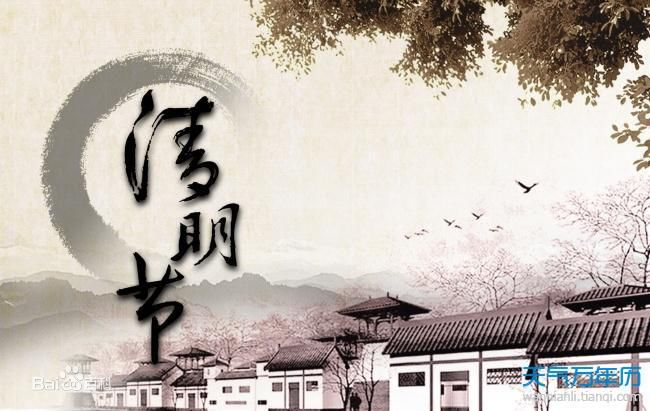 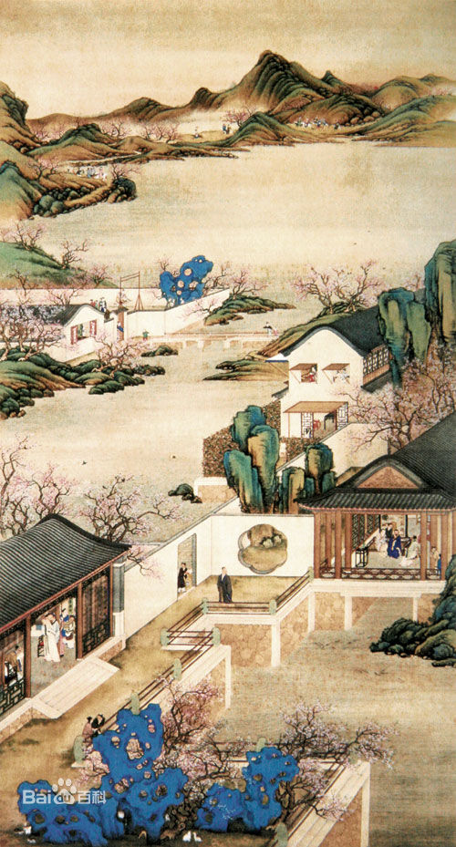 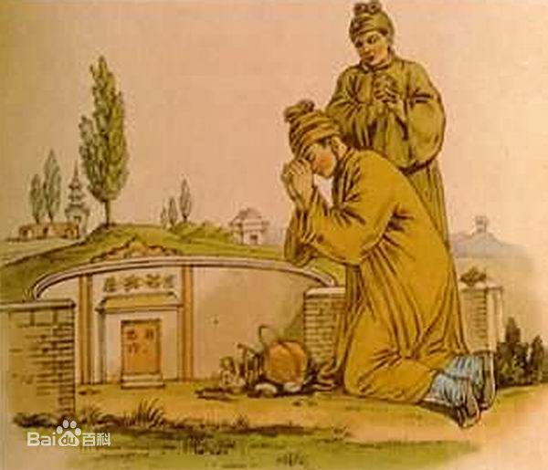
清明节又叫踏青节，在仲春与暮春之交，也就是冬至后的第108天，是中国传统节日之一，也是最重要的祭祀节日之一，是祭祖和扫墓的日子。 中国汉族传统的清明节大约始于周代，距今已有二千五百多年的历史。受汉族文化的影响，中国的满族、赫哲族、壮族、鄂伦春族、侗族、土家族、 苗族、瑶族、黎族、水族、京族、羌族等24个少数民族，也都有过清明节的习俗。虽然各地习俗不尽相同，但扫墓祭祖、踏青郊游是基本主题。 清明节原是指春分后十五天，1935年中华民国政府明定4月5日为国定假日清明节，也叫做民族扫墓节。2006年5月20日，经国务院批准，将清明节列 入第一批国家级非物质文化遗产名录。
相传春秋时期，晋公子重耳为逃避迫害而流亡国外。流亡途中，在一处渺无人烟的地方，又累又饿，再也无力站起来。随臣找了半天也找不到一点吃的，正在大家万分焦急的时候，随臣介子推走到僻静处，从自己的大腿上割下一块肉，煮了一碗肉汤让公子喝了.重耳渐渐恢复了精神，当重耳发现肉是介子推从自己腿上割下的时候，感动得流下了眼泪。 十九年后，重耳做了国君，也就是历史上的晋文公。即位后文公重重赏了当初伴随他流亡的功臣，唯独忘了介子推。很多人为介子推鸣不平，劝他面君讨赏，然而介子推最鄙视那些争功讨赏的人。他打点好行装，同老母亲悄悄的到绵山隐居去了。 晋文公听说后，羞愧莫及，亲自带人去请介子推 ，然而介子推已离家去了绵山。绵山山高路险，树木茂密，找寻两个人谈何容易，有人献计，从三面火烧绵山，逼出介子推。 大火烧遍绵山，却没见介子推的身影，火熄后，人们才发现背着老母亲的介子推已坐在一棵老柳树下死了。晋文公见状，恸哭。装殓时，从树洞里发现一片衣襟，上写道：“割肉奉君尽丹心，但愿主公常清明。”为了纪念介子推，晋文公下令将这一天定为寒食节。 第二年晋文公率众臣登山祭奠，发现老柳树死而复活，便赐老柳树为”清明柳“，并晓谕天下，把寒食节的后一天定为清明节。
清明节的名称与此时天气物侯的特点有关。西汉时期的《淮南子·天文训》中说:“春分后十五日，斗指乙，则清明风至。”“清明风”即清爽明净之风。《岁时百问》则说“万物生长此时，皆清洁而明净。故谓之清明。”虽然作为节日的清明在唐朝才形成，但作为时序标志的清明节气早已被古人所认识，汉代已有了明确的记载。 二十四节气是中国古代天文学家和民众在生活和生产实践中总结出来的气候规律，比较适宜地反映了一年四季气温、物候、降雨等方面的变化，对人们依时安排农耕、蚕桑等活动有不可或缺的指导意义。到了清明，气温变暖，降雨增多，正是春耕春种的大好时节。所以清明对于古代农业生产而言是一个重要的节气。农谚说 “清明前后，点瓜种豆”、“植树造林，莫过清明”，正是说的这个道理。东汉崔寔《四民月令》记载：“清明节，命蚕妾，治蚕室······”说的是这时开始准备养蚕。其中的“清明节”还只是一个节气，不是节日。 清明节气在时间和天气物侯特点上为清明节俗的形成提供了重要条件，该节气被看作清明节的源流之一。
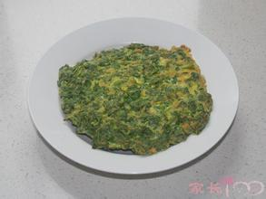清明节要吃青的食物。农村中有蒸制蒿饼的习俗。蒿饼类似江南的青团，制法是：“采新蒿嫩芽和糯米同舂，使蒿汁与米粉融和成一体，以肉、蔬菜、豆沙、枣泥等作馅，纳于各种花式的木模之中，用新芦叶垫底入笼蒸熟。”蒿饼颜色翠绿且带有植物清香，它是清明祭祖的食品之一，也用来馈赠或款待亲友。此外，清明淮扬还有吃茶叶蛋的习俗。
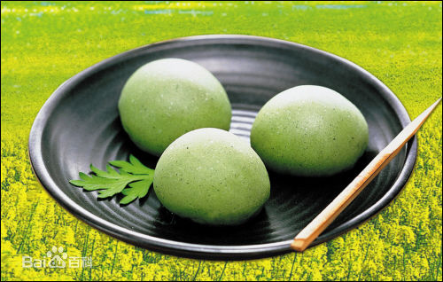清明时节，江南一带有吃青团子的风俗习惯。青团子是用一种名叫“浆麦草”的野生植物捣烂后挤压出汁，接着取用这种汁同晾干后的水磨纯糯米粉拌匀揉和，然后开始制作团子。团子的馅心是用细腻的糖豆沙制成，在包馅时，另放入一小块糖猪油。团坯制好后，将它们入笼蒸熟，出笼时用毛刷将熟菜油均匀地刷在团子的表面，这便大功告成了。青团子油绿如玉，糯韧绵软，清香扑鼻，吃起来甜而不腻，肥而不腴。青团子还是江南一带人用来祭祀祖先必备食品，正因为如此，青团子在江南一带的民间食俗中显得格外重要。
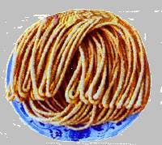我国南北各地清明节有吃馓子的食俗。“馓子”为一油炸食品，香脆精美，古时叫“寒具”。寒食节禁火寒食的风俗在我国大部分地区已不流行，但与这个节日有关的馓子却深受世人的喜爱。现在流行于汉族地区的馓子有南北方的差异：北方馓子大方洒脱，以麦面为主料;南方馓子精巧细致，多以米面为主料。在少数民族地区，馓子的品种繁多，风味各异，尤以维吾尔族、东乡族和纳西族以及宁夏回族的馓子最为有名。
中秋节
中秋节
中秋节
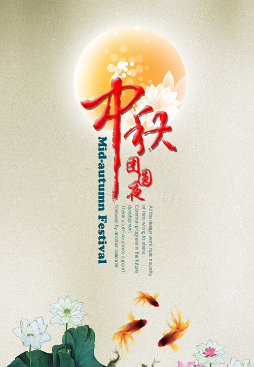 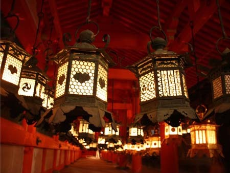 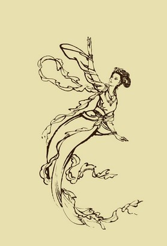
中秋节，又称月夕、秋节、仲秋节、八月节、八月会、追月节、玩月节、拜月节、女儿节或团圆节，是流行于中国众多民族与汉字文化圈诸国的传统文化节日，时在农历八月十五；因其恰值三秋之半，故名，也有些地方将中秋节定在八月十六。中秋节始于唐朝初年，盛行于宋朝，至明清时，已成为与春节齐名的中国主要节日之一。受中华文化的影响，中秋节也是东亚和东南亚一些国家尤其是当地的华人华侨的传统节日。自2008年起中秋节被列为国家法定节假日。2006年5月20日，国务院列入首批国家级非物质文化遗产名录。 中秋节自古便有祭月、赏月、拜月、吃月饼、赏桂花、饮桂花酒等习俗，流传至今，经久不息。中秋节以月之圆兆人之团圆，为寄托思念故乡，思念亲人之情，祈盼丰收、幸福，成为丰富多彩、弥足珍贵的文化遗产。中秋节与端午节、春节、清明节并称为中国四大传统节日。
根据中国的历法，农历八月在秋季中间，为秋季的第二个月，称为“仲秋”，而八月十五又在“仲秋”之中，所以称“中秋”。 中秋节有许多别称：因节期在八月十五，所以称“八月节”、“八月半”；因中秋节的主要活动都是围绕“月”进行的，所以又俗称“月节”“月夕”；中秋节月亮圆满，象征团圆，因而又叫“团圆节”。 在唐朝，中秋节还被称为“端正月”。 关于“团圆节”的记载最早见于明代。《西湖游览志余》中说：“八月十五谓中秋，民间以月饼相送，取团圆之意”。《帝京景物略》中也说：“八月十五祭月，其饼必圆，分瓜必牙错，瓣刻如莲花。……其有妇归宁者，是日必返夫家，曰团圆节也”。
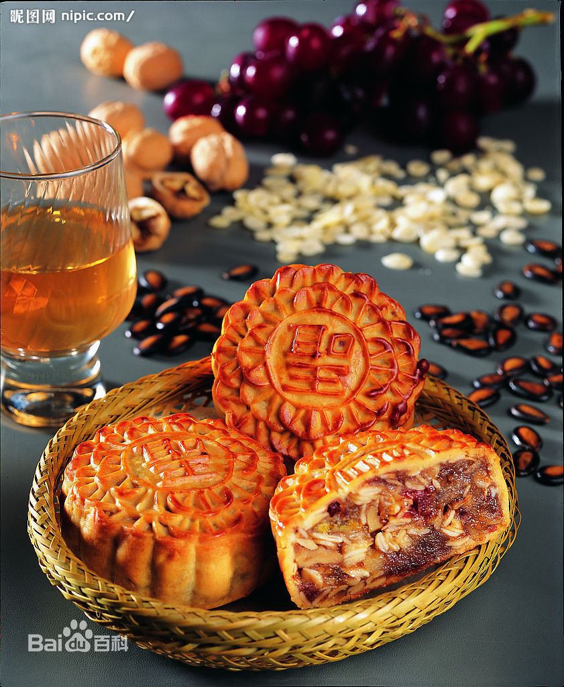 吃月饼以示“团圆”。月饼，又叫胡饼、宫饼、月团、丰收饼、团圆饼等，是古代中秋祭拜月神的供品。相传我国古代，帝王就有春天祭日、秋天祭月的礼制。在民间，每逢八月中秋，也有左右拜月或祭月的风俗。“八月十五月儿圆，中秋月饼香又甜”，这句名谚道出中秋之夜城乡人民吃月饼的习俗。月饼最初是用来祭奉月神的祭品，后来人们逐渐把中秋赏月与品尝月饼，作为家人团圆的一大象征，慢慢的，月饼也就成为了节日的必备礼品。
月饼内馅多采用植物性原料种子，如核桃仁、杏仁、芝麻仁、瓜子、山楂、莲蓉、红小豆、枣泥等，对人体有一定的保健作用。 植物性的种子含不饱和脂肪酸高，以油酸、亚油酸居多，对软化血管防止动脉硬化有益；含矿物质，有利于提高免疫力，预防儿童锌缺乏、缺铁贫血；莲子、红小豆、芝麻含量很高，置换细胞内钠盐排出，营养心肌、调节血压；从中医角度看，一些原料性温平居多，强心、镇静、安神，一些种子富含维生素E，抗衰老，滋皮肤、乌须发。 月饼可以软化血管，防止动脉硬化，提高免疫力。
端午节
端午节
端午节
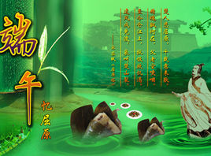 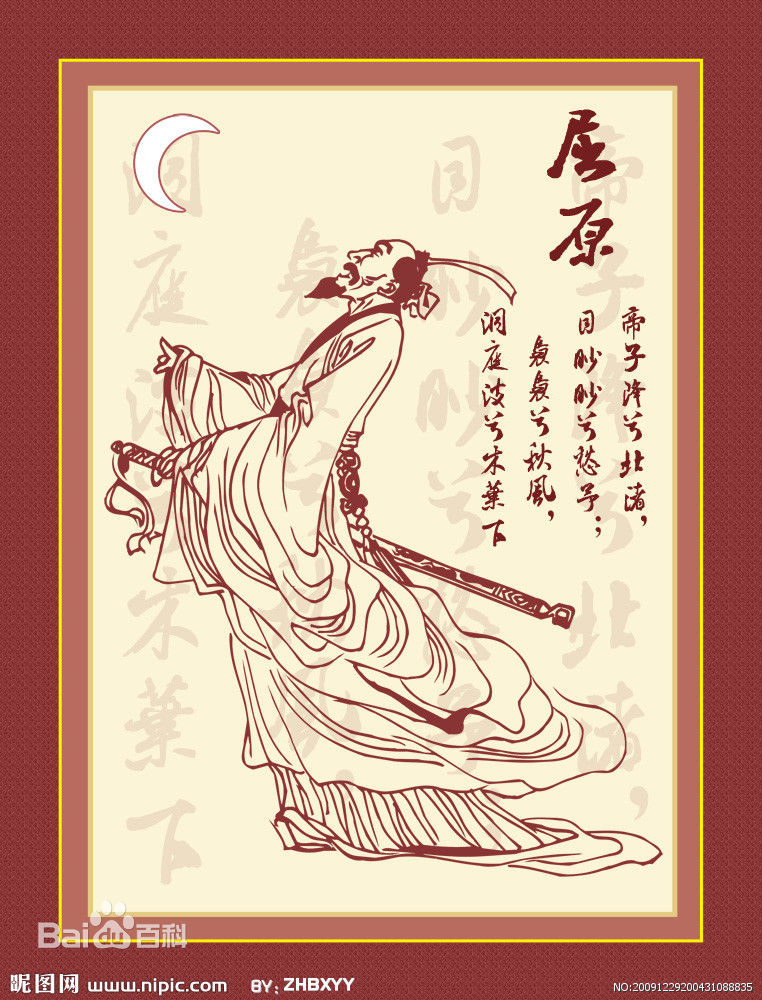 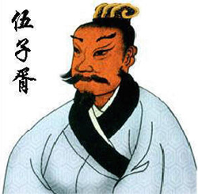
端午节，为每年农历五月初五。据《荆楚岁时记》记载，因仲夏登高，顺阳在上，五月是仲夏，它的第一个午日正是登高顺阳好天气之日，故五月初五亦称为“端阳节”。此外端午节还称“午日节、五月节、龙舟节、浴兰节”等。端午节是流行于中国以及汉字文化圈诸国的传统文化节日。 端午节起源于中国，最初为古代百越地区（长江中下游及以南一带）崇拜龙图腾的部族举行图腾祭祀的节日，百越之地春秋之前有在农历五月初五以龙舟竞渡形式举行部落图腾祭祀的习俗。后因战国时期的楚国（今湖北）诗人屈原在该日抱石跳汨罗江自尽，统治者为树立忠君爱国标签将端午作为纪念屈原的节日；部分地区也有纪念伍子胥、曹娥等说法。 端午节与春节、清明节、中秋节并称为中国汉族的四大传统节日。
古人五月采摘兰草盛行以兰草汤沐浴、除毒之俗。《大戴礼记?夏小正》“五月……煮梅为豆实也蓄兰为沐浴也。”屈原《九歌?云中君》“浴兰汤兮沐芳华采衣兮若英。”南朝梁人宗懔《荆楚岁时记》云“五月五日谓之浴兰节。”此俗流传至唐宋时代又称端午为浴兰之月。 《大戴礼记》为汉文帝时礼学名家戴德选编的是研究上古社会的珍贵资料。如果此说成立端午节在先秦时代已出现迄今历时二千余年可谓渊远流长。
据《史记》“屈原贾生列传”记载，屈原，是春秋时期楚怀王的大臣。他倡导举贤授能，富国强兵，力主联齐抗秦，遭到贵族子兰等人的强烈反对，屈原遭馋去职，被赶出都城，流放到沅、湘流域。他在流放中，写下了忧国忧民的《离骚》、《天问》、《九歌》等不朽诗篇，独具风貌，影响深远（因而，端午节也称诗人节）。公元前278年，秦军攻破楚国京都。屈原眼看自己的祖国被侵略，心如刀割，但是始终不忍舍弃自己的祖国，于五月五日，在写下了绝笔作《怀沙》之后，抱石投汨罗江身死，以自己的生命谱写了一曲壮丽的爱国主义乐章。
传说屈原死后，楚国百姓哀痛异常，纷纷涌到汨罗江边去凭吊屈原。渔夫们划起船只，在江上来回打捞他的真身。有位渔夫拿出为屈原准备的饭团、鸡蛋等食物，“扑通、扑通”地丢进江里，说是让鱼龙虾蟹吃饱了，就不会去咬屈大夫的身体了。人们见后纷纷仿效。一位老医师则拿来一坛雄黄酒倒进江里，说是要药晕蛟龙水兽，以免伤害屈大夫。后来为怕饭团为蛟龙所食，人们想出用楝树叶包饭，外缠彩丝，发展成粽子。 以后，在每年的五月初五，就有了龙舟竞渡、吃粽子、喝雄黄酒的风俗；以此来纪念爱国诗人屈原。
端午节的第二个传说，在江浙一带流传很广，是纪念春秋时期（公元前770-前476年）的伍子胥。伍子胥名员，楚国人，父兄均为楚王所杀，后来子胥弃暗投明，奔向吴国，助吴伐楚，五战而入楚都郢城。当时楚平王已死，子胥掘墓鞭尸三百，以报杀父兄之仇。吴王阖庐死后，其子夫差继位，吴军士气高昂，百战百胜，越国大败，越王勾践请和，夫差许之。子胥建议，应彻底消灭越国，夫差不听，吴国大宰，受越国贿赂，谗言陷害子胥，夫差信之，赐子胥宝剑，子胥以此死。子胥本为忠良，视死如归，在死前对邻舍人说：“我死后，将我眼睛挖出悬挂在吴京之东门上，以看越国军队入城灭吴”，便自刎而死，夫差闻言大怒，令取子胥之尸体装在皮革里于五月五日投入大江，因此相传端午节亦为纪念伍子胥之日。
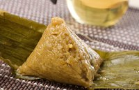“粽子香，香厨房。艾叶香，香满堂。桃枝插在大门上，出门一望麦儿黄。这儿端阳，那儿端阳，处处都端阳。” 这是旧时流行甚广的一首描写过端午节的民谣。总体上说，各地人民过端午节的习俗大同小异，而端午节吃粽子，古往今来，中国各地都一样。如今的粽子更是多种多样，璀璨纷呈。现今各地的粽子，一般都用箬壳包糯米，但内含的花色则根据各地特产和风俗而定，著名的有桂圆粽、肉粽、水晶粽、莲蓉粽、蜜饯粽、板栗粽、辣粽、酸菜粽、火腿粽、咸蛋粽等等。
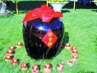端午饮雄黄酒的习俗，从前在长江流域地区极为盛行。古语曾说 “饮了雄黄酒，病魔都远走”。雄黄是一种矿物质，俗称“鸡冠石”，其主要成分是硫化砷，并含有汞，有毒。一般饮用的雄黄酒，只是在白酒或自酿的黄酒里加入微量雄黄而成，无纯饮的。雄黄酒有杀菌驱虫解五毒的功效，中医还用来治皮肤病。在没有碘酒之类消毒剂的古代，用雄黄泡酒，可以祛毒解痒。未到喝酒年龄的小孩子，大人则给他们的额头、耳鼻、手足心等处涂抹上雄黄酒，意在消毒防病，虫豸不叮。
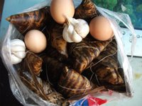河南、浙江等省农村每逢端午节这天，家里的主妇起得特别早，将事先准备好的大蒜和鸡蛋放在一起煮，供一家人早餐食用。有的地方，还在煮大蒜和鸡蛋时放几片艾叶。早餐食大蒜、鸡蛋、烙油馍，这种食法据说可避“五毒”，有益健康。